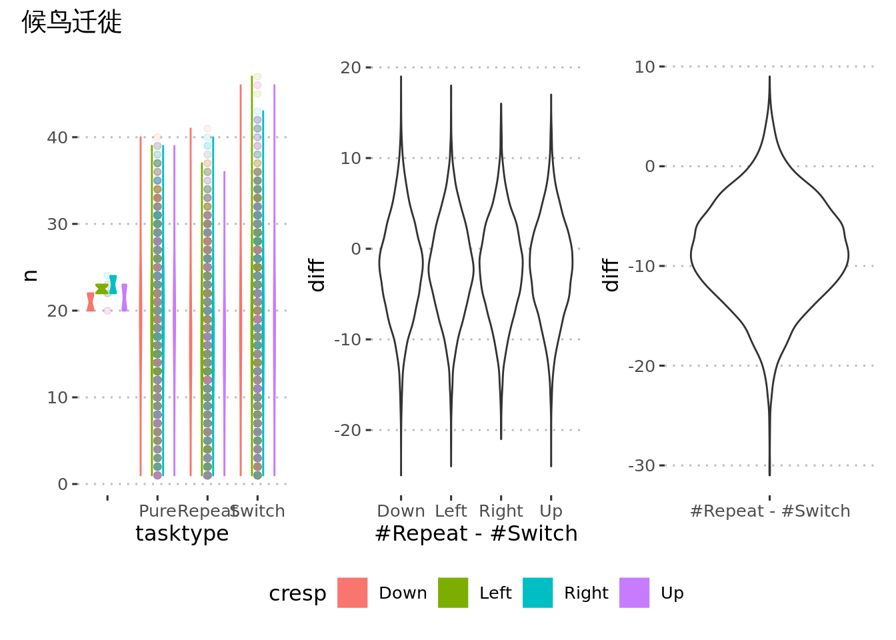
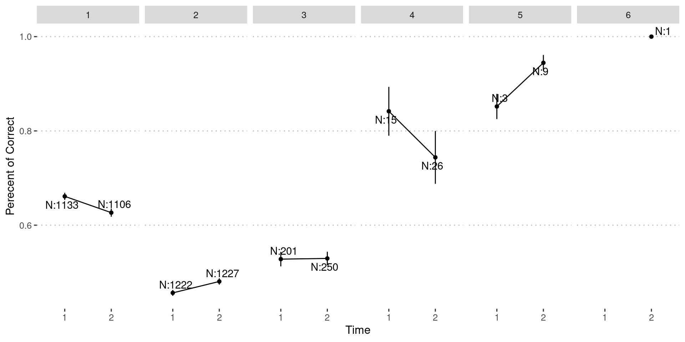
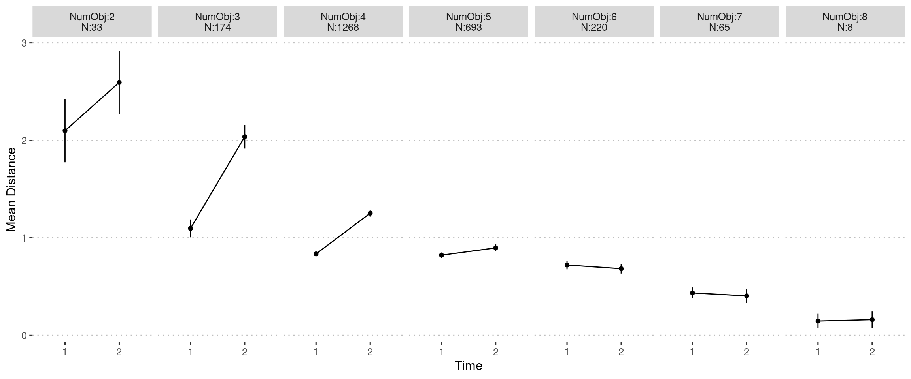
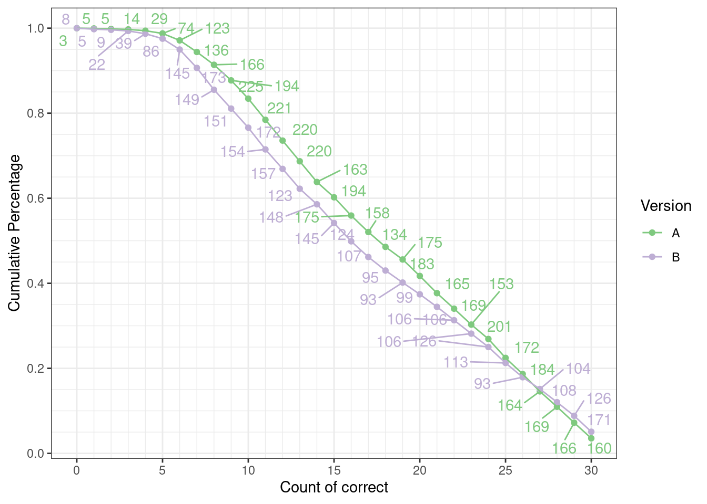
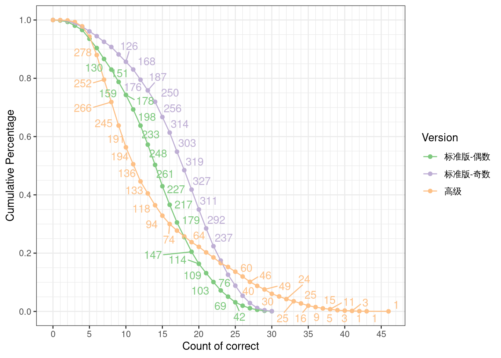
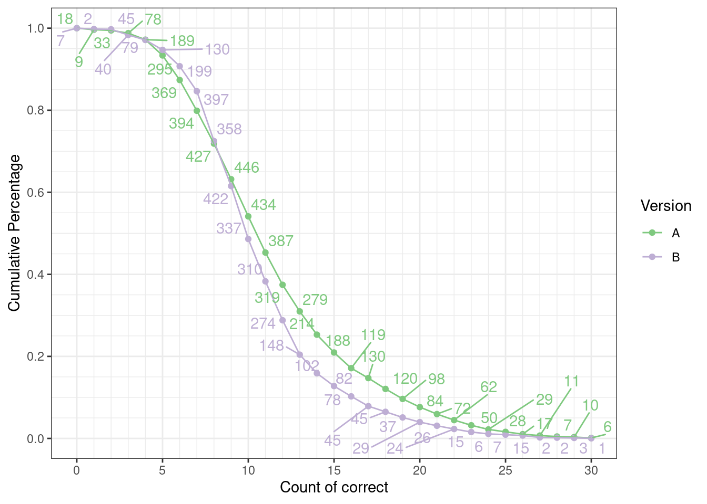
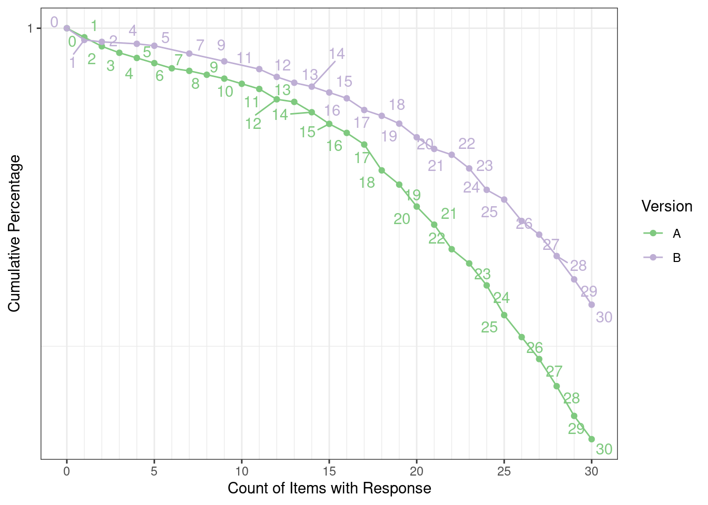
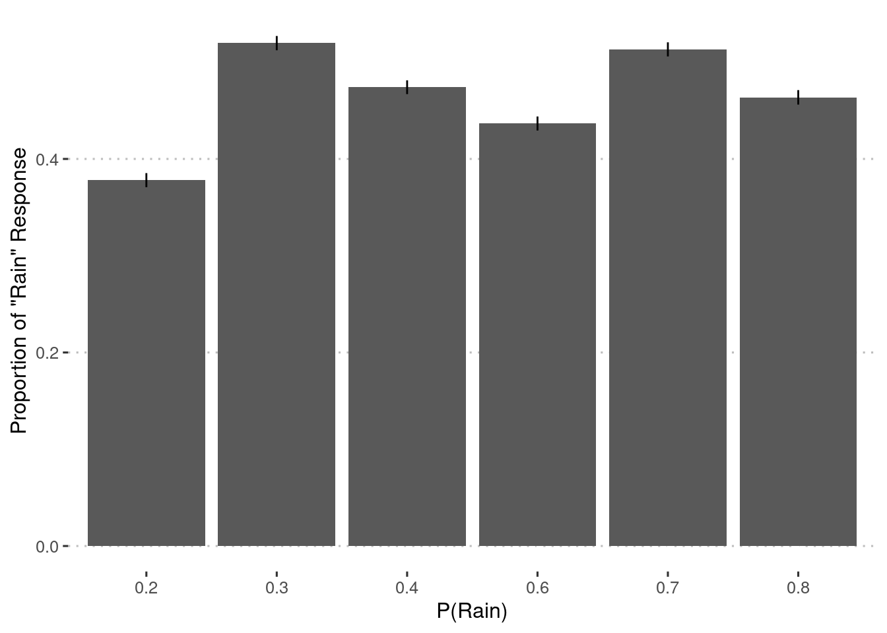

check_stimuli
Liang Zhang
2021-05-26
Last updated: 2021-05-26
Checks: 7 0
Knit directory: cogstruct/
This reproducible R Markdown analysis was created with workflowr (version 1.6.2). The Checks tab describes the reproducibility checks that were applied when the results were created. The Past versions tab lists the development history.
Great! Since the R Markdown file has been committed to the Git repository, you know the exact version of the code that produced these results.
Great job! The global environment was empty. Objects defined in the global environment can affect the analysis in your R Markdown file in unknown ways. For reproduciblity it’s best to always run the code in an empty environment.
The command set.seed(20210521) was run prior to running the code in the R Markdown file. Setting a seed ensures that any results that rely on randomness, e.g. subsampling or permutations, are reproducible.
Great job! Recording the operating system, R version, and package versions is critical for reproducibility.
Nice! There were no cached chunks for this analysis, so you can be confident that you successfully produced the results during this run.
Great job! Using relative paths to the files within your workflowr project makes it easier to run your code on other machines.
Great! You are using Git for version control. Tracking code development and connecting the code version to the results is critical for reproducibility.
The results in this page were generated with repository version 1684c33. See the Past versions tab to see a history of the changes made to the R Markdown and HTML files.
Note that you need to be careful to ensure that all relevant files for the analysis have been committed to Git prior to generating the results (you can use wflow_publish or wflow_git_commit). workflowr only checks the R Markdown file, but you know if there are other scripts or data files that it depends on. Below is the status of the Git repository when the results were generated:
Ignored files:
Ignored: .Rhistory
Ignored: .Rproj.user/
Ignored: R-toy/
Ignored: _targets/
Ignored: image/age_dev/ADHD.png
Ignored: image/age_dev/AscLanJr.png
Ignored: image/age_dev/AscLanMd.png
Ignored: image/age_dev/AscMem.png
Ignored: image/age_dev/AttSrc.png
Ignored: image/age_dev/BART.png
Ignored: image/age_dev/BDS.png
Ignored: image/age_dev/BPSA.png
Ignored: image/age_dev/BPSB.png
Ignored: image/age_dev/BPSC.png
Ignored: image/age_dev/BPSD.png
Ignored: image/age_dev/Bahav.png
Ignored: image/age_dev/Birds.png
Ignored: image/age_dev/CPT.png
Ignored: image/age_dev/CRT.png
Ignored: image/age_dev/CalcMed.png
Ignored: image/age_dev/CalcSpdJr.png
Ignored: image/age_dev/CardSort.png
Ignored: image/age_dev/ColStrp.png
Ignored: image/age_dev/Conners.png
Ignored: image/age_dev/Consent.png
Ignored: image/age_dev/DG.png
Ignored: image/age_dev/DRIA.png
Ignored: image/age_dev/DRIB.png
Ignored: image/age_dev/DRM.png
Ignored: image/age_dev/DRMB.png
Ignored: image/age_dev/Driving.png
Ignored: image/age_dev/DualTask.png
Ignored: image/age_dev/EFEval.png
Ignored: image/age_dev/EP.png
Ignored: image/age_dev/EPS.png
Ignored: image/age_dev/FDS.png
Ignored: image/age_dev/FOLDA.png
Ignored: image/age_dev/FOLDB.png
Ignored: image/age_dev/FPT.png
Ignored: image/age_dev/FPTS.png
Ignored: image/age_dev/FWS.png
Ignored: image/age_dev/Faces.png
Ignored: image/age_dev/Flkr.png
Ignored: image/age_dev/FlkrSpd.png
Ignored: image/age_dev/HOP.png
Ignored: image/age_dev/Hamster.png
Ignored: image/age_dev/Info.png
Ignored: image/age_dev/JLO.png
Ignored: image/age_dev/LdnTwr.png
Ignored: image/age_dev/Lexic.png
Ignored: image/age_dev/LocMemA.png
Ignored: image/age_dev/LocMemAdv.png
Ignored: image/age_dev/LocMemB.png
Ignored: image/age_dev/MOT.png
Ignored: image/age_dev/MOT2.png
Ignored: image/age_dev/MOTS.png
Ignored: image/age_dev/MR3DA.png
Ignored: image/age_dev/MR3DB.png
Ignored: image/age_dev/MRC.png
Ignored: image/age_dev/MRD.png
Ignored: image/age_dev/MltSns.png
Ignored: image/age_dev/MultiTask.png
Ignored: image/age_dev/NLEMed.png
Ignored: image/age_dev/NVRDA.png
Ignored: image/age_dev/NVRDB.png
Ignored: image/age_dev/NVRIA.png
Ignored: image/age_dev/NVRIB.png
Ignored: image/age_dev/Nback.png
Ignored: image/age_dev/NsymNCmp.png
Ignored: image/age_dev/NumSets.png
Ignored: image/age_dev/OneBackFish.png
Ignored: image/age_dev/Ortho.png
Ignored: image/age_dev/Pinyin.png
Ignored: image/age_dev/RAT.png
Ignored: image/age_dev/RavenAdv.png
Ignored: image/age_dev/RavenSE.png
Ignored: image/age_dev/RavenSO.png
Ignored: image/age_dev/Reading.png
Ignored: image/age_dev/Reading2.png
Ignored: image/age_dev/SCSpan.png
Ignored: image/age_dev/SRT.png
Ignored: image/age_dev/SRTS.png
Ignored: image/age_dev/SSTM.png
Ignored: image/age_dev/SSTMS.png
Ignored: image/age_dev/SSTMSpd.png
Ignored: image/age_dev/SchulteAdv.png
Ignored: image/age_dev/SchulteMed.png
Ignored: image/age_dev/Seman.png
Ignored: image/age_dev/SpatTempA.png
Ignored: image/age_dev/SpatTempB.png
Ignored: image/age_dev/StD.png
Ignored: image/age_dev/StopSig.png
Ignored: image/age_dev/Strength.png
Ignored: image/age_dev/SymNCmp.png
Ignored: image/age_dev/Symbol.png
Ignored: image/age_dev/TOVA.png
Ignored: image/age_dev/TOVAS.png
Ignored: image/age_dev/Tone.png
Ignored: image/age_dev/VRAdv.png
Ignored: image/age_dev/VRJr.png
Ignored: image/age_dev/WxPred.png
Ignored: image/test_retest/ADHD.png
Ignored: image/test_retest/AscLanJr.png
Ignored: image/test_retest/AscLanMd.png
Ignored: image/test_retest/AscMem.png
Ignored: image/test_retest/AttSrc.png
Ignored: image/test_retest/BART.png
Ignored: image/test_retest/BDS.png
Ignored: image/test_retest/BPSA.png
Ignored: image/test_retest/BPSB.png
Ignored: image/test_retest/BPSC.png
Ignored: image/test_retest/BPSD.png
Ignored: image/test_retest/Bahav.png
Ignored: image/test_retest/Birds.png
Ignored: image/test_retest/CPT.png
Ignored: image/test_retest/CRT.png
Ignored: image/test_retest/CalcMed.png
Ignored: image/test_retest/CalcSpdJr.png
Ignored: image/test_retest/CardSort.png
Ignored: image/test_retest/ColStrp.png
Ignored: image/test_retest/Conners.png
Ignored: image/test_retest/Consent.png
Ignored: image/test_retest/DG.png
Ignored: image/test_retest/DRIA.png
Ignored: image/test_retest/DRIB.png
Ignored: image/test_retest/DRM.png
Ignored: image/test_retest/DRMB.png
Ignored: image/test_retest/Driving.png
Ignored: image/test_retest/DualTask.png
Ignored: image/test_retest/EFEval.png
Ignored: image/test_retest/EP.png
Ignored: image/test_retest/EPS.png
Ignored: image/test_retest/FDS.png
Ignored: image/test_retest/FOLDA.png
Ignored: image/test_retest/FOLDB.png
Ignored: image/test_retest/FPT.png
Ignored: image/test_retest/FPTS.png
Ignored: image/test_retest/FWS.png
Ignored: image/test_retest/Faces.png
Ignored: image/test_retest/Flkr.png
Ignored: image/test_retest/FlkrSpd.png
Ignored: image/test_retest/HOP.png
Ignored: image/test_retest/Hamster.png
Ignored: image/test_retest/Info.png
Ignored: image/test_retest/JLO.png
Ignored: image/test_retest/LdnTwr.png
Ignored: image/test_retest/Lexic.png
Ignored: image/test_retest/LocMemA.png
Ignored: image/test_retest/LocMemAdv.png
Ignored: image/test_retest/LocMemB.png
Ignored: image/test_retest/MOT.png
Ignored: image/test_retest/MOT2.png
Ignored: image/test_retest/MOTS.png
Ignored: image/test_retest/MR3DA.png
Ignored: image/test_retest/MR3DB.png
Ignored: image/test_retest/MRC.png
Ignored: image/test_retest/MRD.png
Ignored: image/test_retest/MltSns.png
Ignored: image/test_retest/MultiTask.png
Ignored: image/test_retest/NLEMed.png
Ignored: image/test_retest/NVRDA.png
Ignored: image/test_retest/NVRDB.png
Ignored: image/test_retest/NVRIA.png
Ignored: image/test_retest/NVRIB.png
Ignored: image/test_retest/Nback.png
Ignored: image/test_retest/NsymNCmp.png
Ignored: image/test_retest/NumSets.png
Ignored: image/test_retest/OneBackFish.png
Ignored: image/test_retest/Ortho.png
Ignored: image/test_retest/Pinyin.png
Ignored: image/test_retest/RAT.png
Ignored: image/test_retest/RavenAdv.png
Ignored: image/test_retest/RavenSE.png
Ignored: image/test_retest/RavenSO.png
Ignored: image/test_retest/Reading.png
Ignored: image/test_retest/Reading2.png
Ignored: image/test_retest/SCSpan.png
Ignored: image/test_retest/SRT.png
Ignored: image/test_retest/SRTS.png
Ignored: image/test_retest/SSTM.png
Ignored: image/test_retest/SSTMS.png
Ignored: image/test_retest/SSTMSpd.png
Ignored: image/test_retest/SchulteAdv.png
Ignored: image/test_retest/SchulteMed.png
Ignored: image/test_retest/Seman.png
Ignored: image/test_retest/SpatTempA.png
Ignored: image/test_retest/SpatTempB.png
Ignored: image/test_retest/StD.png
Ignored: image/test_retest/StopSig.png
Ignored: image/test_retest/Strength.png
Ignored: image/test_retest/SymNCmp.png
Ignored: image/test_retest/Symbol.png
Ignored: image/test_retest/TOVA.png
Ignored: image/test_retest/TOVAS.png
Ignored: image/test_retest/Tone.png
Ignored: image/test_retest/VRAdv.png
Ignored: image/test_retest/VRJr.png
Ignored: image/test_retest/WxPred.png
Ignored: renv/library/
Ignored: renv/local/
Ignored: renv/staging/
Ignored: report/game_evaluation.html
Ignored: report/stats_digital.csv
Ignored: report/任务修改批注.xlsx
Note that any generated files, e.g. HTML, png, CSS, etc., are not included in this status report because it is ok for generated content to have uncommitted changes.
These are the previous versions of the repository in which changes were made to the R Markdown (analysis/check_stimuli.Rmd) and HTML (docs/check_stimuli.html) files. If you’ve configured a remote Git repository (see ?wflow_git_remote), click on the hyperlinks in the table below to view the files as they were in that past version.
| File | Version | Author | Date | Message |
|---|---|---|---|---|
| Rmd | 1684c33 | Liang Zhang | 2021-05-26 | separate detail checks |
| Rmd | ec22af4 | Liang Zhang | 2021-05-26 | merge check stimuli |
| html | ec22af4 | Liang Zhang | 2021-05-26 | merge check stimuli |
| html | 2406700 | Liang Zhang | 2021-05-26 | Build site. |
| Rmd | b7a7dbb | Liang Zhang | 2021-05-26 | add checking |
Details Checking
restore_data <- function(data) {
attr(data, "meta") |>
left_join(data, by = attr(data, "name_key")) |>
select(!any_of(attr(data, "name_key")))
}
plot_age_dev <- function(data) {
data %>%
group_nest(index) %>%
mutate(
plot_scatter = map2(
data, index,
~ .x %>%
ggplot(aes(user_age, score)) +
geom_point() +
geom_smooth(
method = "lm",
formula = y ~ x,
color = "orange"
) +
stat_cor(
cor.coef.name = "r",
r.accuracy = 0.001,
p.accuracy = 0.001,
show.legend = FALSE,
color = "orange"
) +
scale_x_continuous(breaks = 1:18) +
labs(x = "Age", y = .y) +
theme_pubclean()
),
plot_distribution = map2(
data, index,
~ .x %>%
ggplot(aes(score)) +
geom_histogram(
aes(y = after_stat(density)), bins = 30,
fill = "white", color = "black"
) +
geom_density(color = "lightblue") +
coord_flip() +
theme_void()
),
plot_lines = map(
data,
~ .x %>%
group_by(user_age_int, user_sex) %>%
summarise(n = n(), mean_se(score), .groups = "drop") %>%
ggplot(aes(
user_age_int, y,
ymin = ymin, ymax = ymax,
color = user_sex
)) +
geom_point(position = position_dodge(width = 0.1)) +
geom_line(position = position_dodge(width = 0.1)) +
geom_errorbar(position = position_dodge(width = 0.1), width = 0) +
ggrepel::geom_text_repel(aes(label = n), show.legend = FALSE) +
scale_x_continuous(breaks = 1:18) +
scale_color_viridis_d(labels = c(男 = "Male", 女 = "Female")) +
labs(x = "Age", y = "", color = "Sex") +
theme_pubclean()
)
) %>%
pmap(combine_plots) %>%
wrap_plots(ncol = 1L) +
plot_layout(guides = "collect") &
theme(legend.position = "bottom")
}
combine_plots <- function(plot_scatter, plot_distribution, plot_lines, ...) {
plot_scatter + plot_distribution + plot_lines +
plot_layout(widths = c(5, 1, 5))
}冲突效应
此处需要验证一下刺激序列问题。下图是一致和不一致条件刺激数目差异的分布。可以看出来，候鸟迁徙和多彩文字控制得不够理想。
plot_cong_diff <- function(data, name_type, title) {
counts <- data %>%
group_by(.id, cresp, {{ name_type }}) %>%
summarise(n = n(), .groups = "drop")
p1 <- counts %>%
pivot_wider(c(.id, cresp), names_from = {{ name_type }}, values_from = n) %>%
mutate(diff = Congruent - Incongruent) %>%
ggplot(aes(cresp, diff)) +
geom_violin() +
labs(x = "#Con - #Incong")
p2 <- counts %>%
group_by(.id, {{ name_type }}) %>%
summarise(n = sum(n), .groups = "drop") %>%
pivot_wider(.id, names_from = {{ name_type }}, values_from = n) %>%
mutate(diff = Congruent - Incongruent) %>%
ggplot(aes("#Con - #Incong", diff)) +
geom_violin() +
labs(x = "")
p1 + p2 +
plot_annotation(title = title) &
ggpubr::theme_pubclean(base_family = "SimHei")
}
targets::tar_read(data_parsed_Flkr) %>%
plot_cong_diff(type, title = "太空飞船")
targets::tar_read(data_parsed_ColStrp) %>%
plot_cong_diff(type, title = "多彩文字")
targets::tar_read(data_parsed_Birds) %>%
plot_cong_diff(stimtype, title = "候鸟迁徙")
切换代价
此处需要验证一下刺激序列问题。下图是单一任务、重复和切换条件的刺激数目的分布，以及重复和切换条件的刺激数目差异的分布。这些图形都表明这三种条件的试次数目相差明显，而且重复条件（Repeat）整体上要少于切换条件（Switch）试次数目。
plot_switch_diff <- function(data, name_type, title) {
counts <- data %>%
filter({{ name_type }} != "Filler") %>%
group_by(.id, cresp, {{ name_type }}) %>%
summarise(n = n(), .groups = "drop")
p1 <- ggplot(counts, aes({{ name_type }}, n, color = cresp, fill = cresp)) +
geom_point(alpha = 0.1) +
geom_violin()
p2 <- counts %>%
filter({{ name_type }} %in% c("Repeat", "Switch")) %>%
pivot_wider(c(.id, cresp), names_from = {{ name_type }}, values_from = n) %>%
mutate(diff = Repeat - Switch) %>%
ggplot(aes(cresp, diff)) +
geom_violin() +
labs(x = "#Repeat - #Switch")
p3 <- counts %>%
filter({{ name_type }} %in% c("Repeat", "Switch")) %>%
group_by(.id, {{ name_type }}) %>%
summarise(n = sum(n), .groups = "drop") %>%
pivot_wider(.id, names_from = {{ name_type }}, values_from = n) %>%
mutate(diff = Repeat - Switch) %>%
ggplot(aes("#Repeat - #Switch", diff)) +
geom_violin() +
labs(x = "")
p1 + p2 + p3 +
plot_layout(guides = "collect") &
ggpubr::theme_pubclean(base_family = "SimHei") &
plot_annotation(title = title) &
theme(legend.position='bottom')
}
targets::tar_read(data_parsed_CardSort) %>%
plot_switch_diff(type, title = "卡片分类")targets::tar_read(data_parsed_Faces) %>%
plot_switch_diff(tasktype, title = "察颜观色")
targets::tar_read(data_parsed_Birds) %>%
plot_switch_diff(tasktype, title = "候鸟迁徙")
九五之集
本题目的引导流程问题不大，但的确有相当一部分人作答不够认真或不会做（本题目不会做的可能性其实不大）。
targets::tar_read(data_parsed_NumSets) %>%
group_by(.id) %>%
summarise(pc = mean(acc == 1)) %>%
ggplot(aes(pc)) +
geom_histogram(color = "white") +
ggpubr::theme_pubclean() +
labs(x = "Percent of Correct", y = "Count")
欢乐餐厅
目前验证结果：
难度自适应机制没问题。
目前作图结果是因为去掉异常值导致的。作答成绩较好的被试被当作异常值，因为这些被试作答正确个数很容易超过一般人。需要优化一下算分指标，避免这些作答成绩较好的人成为极端值。
targets::tar_read(indices_AscMem) %>%
ggplot(aes(nc)) +
geom_boxplot() +
scale_y_continuous(breaks = 0, labels = "") +
labs(x = "Count of Correct Responses") +
ggpubr::theme_pubclean(flip = TRUE)
- 另一些证据表明对于一部分被试而言测验过于困难，或者没有认真完成测验。参考下图，低难度情况下被试在第二次完成时成绩反而有所下降。
pc <- targets::tar_read(data_parsed_AscMem) %>%
filter(!is.na(correctness)) %>%
mutate(
pc = dataproc.iquizoo:::parse_char_resp(correctness) %>%
map_dbl(~ mean(.x == 1))
) %>%
group_by(.id, numcust) %>%
summarise(pc = mean(pc), .groups = "drop") %>%
vctrs::vec_restore(targets::tar_read(data_parsed_AscMem))
attr(pc, "meta") %>%
left_join(targets::tar_read(users), by = "user_id") %>%
group_by(user_id) %>%
mutate(occasion = row_number(game_time)) %>%
ungroup() %>%
mutate(
user_age = (user_dob %--% game_time) / dyears(),
user_age_int = round(user_age)
) %>%
group_by(user_age_int) %>%
# remove ages with too few samples
filter(n() >= 100) %>%
ungroup() %>%
left_join(pc, by = ".id") %>%
group_by(user_id) %>%
filter(max(occasion) > 1, occasion < 3) %>%
ungroup() %>%
group_by(numcust, occasion) %>%
summarise(
n = n(),
mean_se(pc),
.groups = "drop"
) %>%
mutate(numcust = factor(numcust)) %>%
ggplot(aes(factor(occasion), y, ymax = ymax, ymin = ymin)) +
geom_point() +
geom_errorbar(width = 0) +
geom_line(aes(group = 1)) +
ggrepel::geom_text_repel(aes(label = str_c("N:", n))) +
facet_wrap(~ numcust, nrow = 1) +
ggpubr::theme_pubclean() +
labs(x = "Time", y = "Perecent of Correct", color = "Number of Customers")
- 上图告诉我们，其实完成测验的人里面，90%以上的人都只完成了1-2难度（此题初始时为2）的情况，这就导致表现很好的被试成为离群点。这启发我们可以考虑只采用这三种难度的试次，可以避免很多自适应带来的算分问题。
宇宙黑洞
关于自适应流程的进一步探索。以宇宙黑洞A为例：
下图是各种长度被试中，至少有2次成绩的情况。其中物体个数2-4的结果表明这些被试相当一部分人作答不认真或完全不会做，且物体个数集中在4-6（此题初始时即为4）。这一情况其实也解释了为什么在重测信度图上显示的第二次比第一次平均成绩稍差。
targets::tar_load(data_parsed_LocMemA)
dists <- data_parsed_LocMemA %>%
mutate(
mean_dist = dataproc.iquizoo:::parse_char_resp(resplocdist) %>%
map_dbl(mean)
) %>%
group_by(.id, numobject) %>%
summarise(mean_dist = mean(mean_dist, na.rm = TRUE), .groups = "drop") %>%
vctrs::vec_restore(data_parsed_LocMemA)
dists_cleaned <- attr(dists, "meta") %>%
left_join(targets::tar_read(users), by = "user_id") %>%
group_by(user_id) %>%
mutate(occasion = row_number(game_time)) %>%
ungroup() %>%
mutate(
user_age = (user_dob %--% game_time) / dyears(),
user_age_int = round(user_age)
) %>%
group_by(user_age_int) %>%
# remove ages with too few samples
filter(n() >= 100) %>%
ungroup() %>%
left_join(dists, by = ".id") %>%
group_by(user_id, numobject, occasion) %>%
summarise(mean_dist = mean(mean_dist), .groups = "drop") %>%
group_by(user_id, numobject) %>%
filter(n() > 1, occasion < 3) %>%
ungroup()
dists_cleaned %>%
group_by(numobject, occasion) %>%
summarise(
n = n(),
mean_se(mean_dist),
.groups = "drop"
) %>%
mutate(numobject = str_glue("NumObj:{numobject}\nN:{n}")) %>%
ggplot(aes(factor(occasion), y, ymax = ymax, ymin = ymin)) +
geom_point() +
geom_errorbar( width = 0) +
geom_line(aes(group = 1)) +
facet_wrap(~ numobject, nrow = 1) +
ggpubr::theme_pubclean() +
labs(x = "Time", y = "Mean Distance", color = "Number of Customers")
如果取全部完成了物体个数为4-6且完成过2次测验的被试（计220名），如下图展示的作答成绩则是正常的。
dists_cleaned %>%
group_by(user_id) %>%
filter(all(4:6 %in% numobject)) %>%
filter(numobject %in% 4:6) %>%
group_by(numobject, occasion) %>%
summarise(
n = n(),
mean_se(mean_dist),
.groups = "drop"
) %>%
ggplot(aes(factor(occasion), y, ymax = ymax, ymin = ymin)) +
geom_point() +
geom_errorbar(width = 0) +
geom_line(aes(group = 1)) +
facet_wrap(~ numobject, nrow = 1) +
ggpubr::theme_pubclean() +
labs(x = "Time", y = "Mean Distance", color = "Number of Customers")最后我们看一下如果采用加权的正确个数后的情况。此处我们采用经验分布的方式将距离投射到\(\left[0,1\right]\)区间，即计算\(1-P\left(x\le d\right)\)。不过根据下面的结果可以看出来这一转换得到的结果（nc_weighted）还不如直接计算正确个数（nc_verbatim）好。不过也许去掉不认真完成测验的用户后效果会好一些，只是目前找不到好的方法确定哪些用户不认真。
pool_location <- expand_grid(x = 1:6, y = 1:10) %>%
filter(!(x %in% 3:4 & y %in% 3:8))
dists <- combn(nrow(pool_location), 2, simplify = FALSE) %>%
map_dbl(
~ dist(rbind(pool_location[.x[[1]], ], pool_location[.x[[2]], ]))[[1]]
)
dist_cdf <- ecdf(dists)
nc <- data_parsed_LocMemA %>%
mutate(
dists = dataproc.iquizoo:::parse_char_resp(resplocdist),
nc_weighted = map_dbl(dists, ~ sum(1 - dist_cdf(.x))),
nc_verbatim = map_dbl(dists, ~ sum(.x == 0))
) %>%
group_by(.id) %>%
summarise(
nc_weighted = sum(nc_weighted),
nc_verbatim = sum(nc_verbatim),
.groups = "drop"
) %>%
pivot_longer(-.id, names_to = "index", values_to = "score") %>%
vctrs::vec_restore(data_parsed_LocMemA)
nc_weighted_clean <- attr(nc, "meta") %>%
left_join(targets::tar_read(users), by = "user_id") %>%
group_by(user_id) %>%
mutate(occasion = row_number(game_time)) %>%
ungroup() %>%
mutate(
user_age = (user_dob %--% game_time) / dyears(),
user_age_int = round(user_age)
) %>%
group_by(user_age_int) %>%
# remove ages with too few samples
filter(n() >= 100) %>%
ungroup() %>%
left_join(nc, by = ".id")
plot_age_dev(nc_weighted_clean)
nc_weighted_clean %>%
group_by(user_id, game_id) %>%
filter(max(occasion) > 1, occasion != 3) %>%
ungroup() %>%
mutate(occasion = factor(occasion, 1:2, c("test", "retest"))) %>%
group_by(user_id, index) %>%
ungroup() %>%
pivot_wider(
c(user_id, game_id, index),
names_from = occasion,
values_from = score
) %>%
group_nest(index) %>%
mutate(
icc = map_dbl(
data,
~ pluck(psych::ICC(select(.x, test, retest)), "results", "ICC", 3)
),
.keep = "unused"
) %>%
knitr::kable(digits = 2)| index | icc |
|---|---|
| nc_verbatim | 0.31 |
| nc_weighted | 0.27 |
推理测验
question_groups <- tarflow.iquizoo::fetch("sql/question_group.sql")数字推理
下图看起来，全部题目回答正确的人数比例大约为5%，没有天花板现象，且全部完成30道题目的人数不低于80%。据此推断30道题目比较合适。
data <- bind_rows(
A = restore_data(targets::tar_read(data_parsed_DRIA)),
B = restore_data(targets::tar_read(data_parsed_DRIB)),
.id = "ver"
)
data |>
group_by(ver, user_id, game_time) |>
summarise(nc = sum(acc == 1), .groups = "drop") |>
group_by(ver) |>
group_modify(~ janitor::tabyl(.x, nc)) |>
arrange(desc(nc)) |>
mutate(cum_percent = cumsum(percent)) |>
ggplot(aes(nc, cum_percent, label = n, color = ver)) +
geom_point() +
geom_line() +
scale_x_continuous(
breaks = seq(0, 30, by = 5),
minor_breaks = 0:30
) +
scale_y_continuous(
breaks = seq(0, 1, by = 0.2),
minor_breaks = seq(0, 1, by = 0.05)
) +
ggrepel::geom_text_repel(show.legend = FALSE) +
scale_color_brewer(palette = "Accent") +
labs(x = "Count of correct", y = "Cumulative Percentage", color = "Version") +
theme_bw()
data |>
group_by(ver, user_id, game_time) |>
summarise(n = sum(acc != -1), .groups = "drop") |>
group_by(ver) |>
group_modify(~ janitor::tabyl(.x, n)) |>
arrange(desc(n)) |>
mutate(cum_percent = cumsum(percent)) |>
ggplot(aes(n, cum_percent, label = n, color = ver)) +
geom_point() +
geom_line() +
scale_x_continuous(
breaks = seq(0, 30, by = 5),
minor_breaks = 0:30
) +
scale_y_continuous(
breaks = seq(0, 1, by = 0.2),
minor_breaks = seq(0, 1, by = 0.05)
) +
ggrepel::geom_text_repel(show.legend = FALSE) +
scale_color_brewer(palette = "Accent") +
labs(x = "Count of Items with Response", y = "Cumulative Percentage", color = "Version") +
theme_bw()
下面对数字归纳推理的题目做了一下聚类，选题时根据这一分类做了新题。
reshape_data <- function(data, prefix) {
data %>%
filter(acc != -1, rt >= 1000) %>%
left_join(question_groups, by = c("itemid" = "item_id")) %>%
pivot_wider(
.id,
names_from = "item_order",
values_from = "acc",
names_prefix = prefix
) %>%
vctrs::vec_restore(data)
}
data_a <- reshape_data(targets::tar_read(data_parsed_DRIA), prefix = "a_")
data_b <- reshape_data(targets::tar_read(data_parsed_DRIB), prefix = "b_")
data <- left_join(data_a, attr(data_a, "meta"), by = ".id") %>%
left_join(left_join(data_b, attr(data_b, "meta"), by = ".id"), by = "user_id") %>%
select(all_of(setdiff(c(names(data_a), names(data_b)), ".id")))
fa_result <- psych::fa(drop_na(data), 5, cor = "mixed")# fa_result$loadings %>% unclass() %>% heatmaply::heatmaply_cor(dendrogram = "row", k_row = NA)
clusters <- unclass(fa_result$loadings) %>%
dist() %>%
hclust() %>%
dendextend::find_k() %>%
pluck("pamobject", "clustering") %>%
enframe(name = "item", value = "cluster")
difficulties <- data %>%
summarise(across(.fns = mean, na.rm = TRUE)) %>%
pivot_longer(everything(), names_to = "item", values_to = "difficulty")
stats_digital <- clusters %>%
left_join(difficulties, by = "item") %>%
separate(item, c("version", "order"))
ggplot(
stats_digital,
aes(cluster, difficulty, label = order, color = version)
) +
geom_point() +
ggrepel::geom_text_repel(show.legend = FALSE)
write_csv(stats_digital, "report/stats_digital.csv")文字推理
此题目难度有点大，所以很多人并没有完成30道题目，特别是高级版。不过目前我们已经对题目做了一些简化。
data <- bind_rows(
初级 = restore_data(targets::tar_read(data_parsed_VRJr)),
高级 = restore_data(targets::tar_read(data_parsed_VRAdv)),
.id = "ver"
)
data |>
group_by(ver, user_id, game_time) |>
summarise(nc = sum(acc == 1), .groups = "drop") |>
group_by(ver) |>
group_modify(~ janitor::tabyl(.x, nc)) |>
arrange(desc(nc)) |>
mutate(cum_percent = cumsum(percent)) |>
ggplot(aes(nc, cum_percent, label = n, color = ver)) +
geom_point() +
geom_line() +
scale_x_continuous(
breaks = seq(0, 30, by = 5),
minor_breaks = 0:30
) +
scale_y_continuous(
breaks = seq(0, 1, by = 0.2),
minor_breaks = seq(0, 1, by = 0.05)
) +
ggrepel::geom_text_repel(show.legend = FALSE) +
scale_color_brewer(palette = "Accent") +
labs(x = "Count of correct", y = "Cumulative Percentage", color = "Version") +
theme_bw()data |>
group_by(ver, user_id, game_time) |>
summarise(n = sum(acc != -1), .groups = "drop") |>
group_by(ver) |>
group_modify(~ janitor::tabyl(.x, n)) |>
arrange(desc(n)) |>
mutate(cum_percent = cumsum(percent)) |>
ggplot(aes(n, cum_percent, label = n, color = ver)) +
geom_point() +
geom_line() +
scale_x_continuous(
breaks = seq(0, 30, by = 5),
minor_breaks = 0:30
) +
scale_y_continuous(
breaks = seq(0, 1, by = 0.2),
minor_breaks = seq(0, 1, by = 0.05)
) +
ggrepel::geom_text_repel(show.legend = FALSE) +
scale_color_brewer(palette = "Accent") +
labs(x = "Count of Items with Response", y = "Cumulative Percentage", color = "Version") +
theme_bw()
data_jr <- reshape_data(targets::tar_read(data_parsed_VRJr), prefix = "jr_")
data_adv <- reshape_data(targets::tar_read(data_parsed_VRAdv), prefix = "adv_")
data <- left_join(data_jr, attr(data_jr, "meta"), by = ".id") %>%
left_join(left_join(data_adv, attr(data_adv, "meta"), by = ".id"), by = "user_id") %>%
select(all_of(setdiff(c(names(data_jr), names(data_adv)), ".id")))
difficulties <- data %>%
summarise(across(.fns = mean, na.rm = TRUE)) %>%
pivot_longer(everything(), names_to = "item", values_to = "difficulty")瑞文推理
高级版计48道题目，目前设定为30分钟，时间很充足（超过90%的人都全部完成）。而标准版奇数和偶数版各15题，目前设定为15分钟，时间很充足（超过90%的人都全部完成）
data <- bind_rows(
`标准版-偶数` = restore_data(targets::tar_read(data_parsed_RavenSE)),
`标准版-奇数` = restore_data(targets::tar_read(data_parsed_RavenSO)),
高级 = restore_data(targets::tar_read(data_parsed_RavenAdv)),
.id = "ver"
)
data |>
group_by(ver, user_id, game_time) |>
summarise(nc = sum(acc == 1), .groups = "drop") |>
group_by(ver) |>
group_modify(~ janitor::tabyl(.x, nc)) |>
arrange(desc(nc)) |>
mutate(cum_percent = cumsum(percent)) |>
ggplot(aes(nc, cum_percent, label = n, color = ver)) +
geom_point() +
geom_line() +
scale_x_continuous(
breaks = seq(0, 50, by = 5),
minor_breaks = 0:50
) +
scale_y_continuous(
breaks = seq(0, 1, by = 0.2),
minor_breaks = seq(0, 1, by = 0.05)
) +
ggrepel::geom_text_repel(show.legend = FALSE) +
scale_color_brewer(palette = "Accent") +
labs(x = "Count of correct", y = "Cumulative Percentage", color = "Version") +
theme_bw()
data |>
group_by(ver, user_id, game_time) |>
summarise(n = sum(acc != -1), .groups = "drop") |>
group_by(ver) |>
group_modify(~ janitor::tabyl(.x, n)) |>
arrange(desc(n)) |>
mutate(cum_percent = cumsum(percent)) |>
ggplot(aes(n, cum_percent, label = n, color = ver)) +
geom_point() +
geom_line() +
scale_x_continuous(
breaks = seq(0, 50, by = 5),
minor_breaks = 0:50
) +
scale_y_continuous(
breaks = seq(0, 1, by = 0.2),
minor_breaks = seq(0, 1, by = 0.05)
) +
ggrepel::geom_text_repel(show.legend = FALSE) +
scale_color_brewer(palette = "Accent") +
labs(x = "Count of Items with Response", y = "Cumulative Percentage", color = "Version") +
theme_bw()
二维心理旋转
根据下面的图看起来，50个题目数量基本合适（也许可以考虑将数目减少至40个）。
data <- bind_rows(
C = restore_data(targets::tar_read(data_parsed_MRC)),
D = restore_data(targets::tar_read(data_parsed_MRD)),
.id = "ver"
)
data |>
group_by(ver, user_id, game_time) |>
summarise(nc = sum(acc == 1), .groups = "drop") |>
group_by(ver) |>
group_modify(~ janitor::tabyl(.x, nc)) |>
arrange(desc(nc)) |>
mutate(cum_percent = cumsum(percent)) |>
ggplot(aes(nc, cum_percent, label = n, color = ver)) +
geom_point() +
geom_line() +
scale_x_continuous(
breaks = seq(0, 50, by = 5),
minor_breaks = 0:50
) +
scale_y_continuous(
breaks = seq(0, 1, by = 0.2),
minor_breaks = seq(0, 1, by = 0.05)
) +
ggrepel::geom_text_repel(show.legend = FALSE, max.overlaps = 100) +
scale_color_brewer(palette = "Accent") +
labs(x = "Count of correct", y = "Cumulative Percentage", color = "Version") +
theme_bw()
data |>
group_by(ver, user_id, game_time) |>
summarise(n = sum(acc != -1), .groups = "drop") |>
group_by(ver) |>
group_modify(~ janitor::tabyl(.x, n)) |>
arrange(desc(n)) |>
mutate(cum_percent = cumsum(percent)) |>
ggplot(aes(n, cum_percent, label = n, color = ver)) +
geom_point() +
geom_line() +
scale_x_continuous(
breaks = seq(0, 50, by = 5),
minor_breaks = 0:50
) +
scale_y_continuous(
breaks = seq(0, 1, by = 0.2),
minor_breaks = seq(0, 1, by = 0.05)
) +
ggrepel::geom_text_repel(show.legend = FALSE, max.overlaps = 100) +
scale_color_brewer(palette = "Accent") +
labs(x = "Count of Items with Response", y = "Cumulative Percentage", color = "Version") +
theme_bw()
三维心理旋转
根据下面的图看起来，30个题目数量是合适的。
data <- bind_rows(
A = restore_data(targets::tar_read(data_parsed_MR3DA)),
B = restore_data(targets::tar_read(data_parsed_MR3DB)),
.id = "ver"
)
data |>
group_by(ver, user_id, game_time) |>
summarise(nc = sum(acc == 1), .groups = "drop") |>
group_by(ver) |>
group_modify(~ janitor::tabyl(.x, nc)) |>
arrange(desc(nc)) |>
mutate(cum_percent = cumsum(percent)) |>
ggplot(aes(nc, cum_percent, label = n, color = ver)) +
geom_point() +
geom_line() +
scale_x_continuous(
breaks = seq(0, 30, by = 5),
minor_breaks = 0:30
) +
scale_y_continuous(
breaks = seq(0, 1, by = 0.2),
minor_breaks = seq(0, 1, by = 0.05)
) +
ggrepel::geom_text_repel(show.legend = FALSE, max.overlaps = 100) +
scale_color_brewer(palette = "Accent") +
labs(x = "Count of correct", y = "Cumulative Percentage", color = "Version") +
theme_bw()
data |>
group_by(ver, user_id, game_time) |>
summarise(n = sum(acc != -1), .groups = "drop") |>
group_by(ver) |>
group_modify(~ janitor::tabyl(.x, n)) |>
arrange(desc(n)) |>
mutate(cum_percent = cumsum(percent)) |>
ggplot(aes(n, cum_percent, label = n, color = ver)) +
geom_point() +
geom_line() +
scale_x_continuous(
breaks = seq(0, 30, by = 5),
minor_breaks = 0:30
) +
scale_y_continuous(
breaks = seq(0, 1, by = 0.2),
minor_breaks = seq(0, 1, by = 0.05)
) +
ggrepel::geom_text_repel(show.legend = FALSE, max.overlaps = 100) +
scale_color_brewer(palette = "Accent") +
labs(x = "Count of Items with Response", y = "Cumulative Percentage", color = "Version") +
theme_bw()
远距离联想测试
题目数量明显偏多。解决方案是找一些更简单的题目并减少题目数量。
data <- restore_data(targets::tar_read(data_parsed_RAT))
data |>
group_by(user_id, game_time) |>
summarise(nc = sum(acc == 1), .groups = "drop") |>
janitor::tabyl(nc) |>
arrange(desc(nc)) |>
mutate(cum_percent = cumsum(percent)) |>
ggplot(aes(nc, cum_percent, label = n)) +
geom_point() +
geom_line() +
scale_x_continuous(
breaks = seq(0, 50, by = 5),
minor_breaks = 0:50
) +
scale_y_continuous(
breaks = seq(0, 1, by = 0.2),
minor_breaks = seq(0, 1, by = 0.05)
) +
ggrepel::geom_text_repel(show.legend = FALSE, max.overlaps = 100) +
scale_color_brewer(palette = "Accent") +
labs(x = "Count of correct", y = "Cumulative Percentage") +
theme_bw()
data |>
group_by(user_id, game_time) |>
summarise(n = sum(acc != -1), .groups = "drop") |>
janitor::tabyl(n) |>
arrange(desc(n)) |>
mutate(cum_percent = cumsum(percent)) |>
ggplot(aes(n, cum_percent, label = n)) +
geom_point() +
geom_line() +
scale_x_continuous(
breaks = seq(0, 50, by = 5),
minor_breaks = 0:50
) +
scale_y_continuous(
breaks = seq(0, 1, by = 0.2),
minor_breaks = seq(0, 1, by = 0.05)
) +
ggrepel::geom_text_repel(show.legend = FALSE, max.overlaps = 100) +
scale_color_brewer(palette = "Accent") +
labs(x = "Count of Items with Response", y = "Cumulative Percentage") +
theme_bw()
塔罗牌
这个题目主要是检查下目前刺激的概率配置能否被用户预测到。
data <- restore_data(targets::tar_read(data_parsed_WxPred))
data |>
group_by(user_id, game_time) |>
filter(n() == 120, between(probrain, 0.2, 0.8)) |>
group_by(user_id, game_time, probrain) |>
summarise(p_resp_rain = mean(resp == "Rain"), .groups = "drop") |>
group_by(probrain) |>
summarise(mean_se(p_resp_rain), .groups = "drop") |>
ggplot(aes(factor(probrain), y, ymax = ymax, ymin = ymin)) +
geom_col() +
geom_errorbar(width = 0) +
labs(x = "P(Rain)", y = "Proportion of \"Rain\" Response") +
theme_pubclean()
上图给出了每种下雨概率条件的用户预测“下雨”的比例。可以看出，用户预测“下雨”的比例并不明显随着刺激本身下雨的概率增加而增加。
data |>
group_by(user_id, game_time) |>
filter(n() == 120, between(probrain, 0.2, 0.8)) |>
group_by(probrain, trial, outcome) |>
summarise(p_resp_rain = mean(resp == "Rain"), .groups = "drop") |>
ggplot(aes(factor(trial), p_resp_rain, label = trial)) +
geom_point(aes(color = outcome), size = 4) +
geom_line(aes(group = 1)) +
scale_color_grey() +
facet_wrap(~ probrain, labeller = "label_both", ncol = 2, scales = "free_x") +
labs(x = "Trial", y = "Percentage of Correct", color = "Outcome") +
theme_pubclean()
上图给出了每个试次中，对当前刺激做出“下雨”预测的比例。再一次看出来用户似乎没有学会这些模式的下雨概率。目前单个模式出现20次仍然不能学会这个概率，表明这个难度偏大。有两个改版方式：
- 直接采用简单的单个图片预测模式，确定6张不同图片分别为6种不同的预测概率[@frank2004]。
- 采用原始的天气预报范式的设置，即单个图片出现与否也有一定预测作用，同时如果注意到整体模式，则预测效果更好[@knowlton1994]。
捉虫-高级版
这个题目目前有很多反应速度很快的情况。
bind_rows(
TOVA = restore_data(targets::tar_read(data_parsed_TOVA)),
`TOVA-S` = restore_data(targets::tar_read(data_parsed_TOVAS)),
CPT = restore_data(targets::tar_read(data_parsed_CPT)),
.id = "task_name"
) |>
filter(rt != 0, type == "Target") |>
ggplot(aes(rt, task_name, fill = 0.5 - abs(0.5 - after_stat(ecdf)))) +
ggridges::stat_density_ridges(
geom = "density_ridges_gradient",
calc_ecdf = TRUE,
rel_min_height = 0.001,
scale = 1.2
) +
scale_fill_viridis_c(guide = FALSE, direction = -1) +
scale_x_continuous(expand = c(0.005, 0.005)) +
labs(x = "Rection Time (ms)", y = "Task Name") +
theme_pubclean(flip = TRUE)
不过看这个图，我们会发现捉虫、捉虫-高级版和捉虫-高级简版的反应时基本分布相当，所以反应时记录不是问题。
数感
我们检查一下各个难度的作答结果。
restore_data(targets::tar_read(data_parsed_NsymNCmp)) |>
mutate(ratio = bigsetcount / smallsetcount) |>
filter(!is.na(ratio)) |>
group_by(user_id, game_time, ratio) |>
summarise(pc = mean(acc == 1), .groups = "drop") |>
mutate(ratio_str = as.character(MASS::as.fractions(ratio))) |>
ggplot(aes(reorder(ratio_str, ratio), pc)) +
geom_violin() +
stat_summary() +
stat_summary(geom = "line", group = 1) +
labs(x = "More/Less", y = "Percentage of Correct") +
theme_pubclean()可以看出来确实随着难度的减少，即“More/Less”的增加，正确率有所上升。不过这个效果不是很明显。
Conclusion
read_csv("config/check_summary.csv") |>
knitr::kable()| 游戏名称 | 英文简称 | 修改总结 |
|---|---|---|
| 吹气球 | BART | 改为拖动条输入打气次数 |
| 模拟驾驶 | Driving | 暂无 |
| 钓鱼高手 | DG | 暂无 |
| 变色魔块 | StopSig | 暂无 |
| 察颜观色 | Faces | 添加序列 |
| 候鸟迁徙 | Birds | 添加序列 |
| 多彩文字 | ColStrp | 暂无 |
| 太空飞船 | Flkr | 暂无 |
| 太空飞船极速版 | FlkrSpd | 暂无 |
| 卡片分类 | CardSort | 添加序列 |
| 图片记忆A | BPSA | 暂无 |
| 图片记忆B | BPSB | 暂无 |
| 图片记忆C | BPSC | 暂无 |
| 图片记忆D | BPSD | 暂无 |
| 言语记忆 | DRM | 暂无 |
| 言语记忆B | DRMB | 暂无 |
| 二维心理旋转测试C | MRC | 改为40题更佳 |
| 二维心理旋转测试D | MRD | 改为40题更佳 |
| 三维心理旋转测试A | MR3DA | 暂无 |
| 三维心理旋转测试B | MR3DB | 暂无 |
| 数字归纳推理A | DRIA | 统一为数字推理A和B |
| 数字归纳推理B | DRIB | 统一为数字推理A和B |
| 图形归纳推理A | NVRIA | 统一为图形推理A和B |
| 图形归纳推理B | NVRIB | 统一为图形推理A和B |
| 图形演绎推理A | NVRDA | 统一为图形推理A和B |
| 图形演绎推理B | NVRDB | 统一为图形推理A和B |
| 图形折叠与展开A | FOLDA | 使用新题目 |
| 图形折叠与展开B | FOLDB | 使用新题目 |
| 文字推理-初级 | VRJr | 统一为文字推理A和B |
| 文字推理-高级 | VRAdv | 统一为文字推理A和B |
| 远距离联想测试 | RAT | 减少题目数量和难度 |
| 阅读理解 | Reading2 | 暂无 |
| 阅读判断 | Reading | 暂无 |
| 瑞文标准推理偶数版 | RavenSE | 暂无 |
| 瑞文标准推理奇数版 | RavenSO | 暂无 |
| 瑞文高级推理 | RavenAdv | 暂无 |
| 人工语言-初级 | AscLanJr | 暂无 |
| 人工语言-中级 | AscLanMd | 暂无 |
| 欢乐餐厅 | AscMem | 自适应导致部分人得分偏高，建议固定长度 |
| 火眼金睛 | AttSrc | 暂无 |
| 连点成画 | FPT | 暂无 |
| 连点成画极速版 | FPTS | 暂无 |
| 专注大师 | CalcSpdJr | 暂无 |
| 阻挡陨石 | EP | 不适合于测评，可基于此做训练游戏 |
| 阻挡陨石极速版 | EPS | 不适合于测评，可基于此做训练游戏 |
| 请你找茬 | StD | 优化作答限制，使作答次数等于总差异数目 |
| 舒尔特方格（高级） | SchulteAdv | 暂无 |
| 舒尔特方格（中级） | SchulteMed | 暂无 |
| 词语判断 | Lexic | 暂无 |
| 符号判断 | Symbol | 暂无 |
| 拼音判断 | Pinyin | 暂无 |
| 声调判断 | Tone | 暂无 |
| 语义判断 | Seman | 暂无 |
| 字形判断 | Ortho | 暂无 |
| 一心多用 | MultiTask | 改变刺激呈现为连续呈现 |
| 一心二用 | DualTask | 改变刺激呈现为连续呈现 |
| 捉虫 | CPT | 暂无 |
| 捉虫高级版 | TOVA | 暂无 |
| 捉虫高级简版 | TOVAS | 暂无 |
| 快打地鼠 | Hamster | 暂无 |
| 快速归类 | CRT | 暂无 |
| 超级秒表 | SRT | 暂无 |
| 超级秒表极速版 | SRTS | 暂无 |
| 方向临摹 | JLO | 暂无 |
| 城市导航 | LocMemAdv | 暂无 |
| 宇宙黑洞A | LocMemA | 由于自适应问题，修改算分为总正确个数 |
| 宇宙黑洞B | LocMemB | 由于自适应问题，修改算分为总正确个数 |
| 时空相机A | SpatTempA | 由于自适应问题，修改算分为总正确个数 |
| 时空相机B | SpatTempB | 由于自适应问题，修改算分为总正确个数 |
| 按图索骥 | HOP | 暂无 |
| 各得其所 | LdnTwr | 修复已有BUG |
| 视听反应 | MltSns | 暂无 |
| 魔术师B | Nback | 已修改，目前只保留了2-back和3-back |
| 河道捕鱼 | OneBackFish | 暂无 |
| 倒背数 | BDS | 暂无 |
| 顺背数 | FDS | 暂无 |
| 方块速记 | SSTMS | 暂无 |
| 位置记忆 | SSTM | 暂无 |
| 位置记忆极速版 | SSTMSpd | 暂无 |
| 蝴蝶照相机 | SCSpan | 暂无 |
| 过目不忘 | FWS | 暂无 |
| 萤火虫 | MOT | 暂无 |
| 萤火虫高级版 | MOT2 | 暂无 |
| 萤火虫极速版 | MOTS | 暂无 |
| 速算师（中级） | CalcMed | 暂无 |
| 九五之集 | NumSets | 暂无 |
| 登陆月球（中级） | NLEMed | 暂无 |
| 数感 | NsymNCmp | 暂无 |
| 数字大小比较 | SymNCmp | 暂无 |
| 塔罗牌 | WxPred | 目前的模式用户仍然分不清，建议改为原始设计或者直接使用单个图片对应概率的方式 |
| 在线认知测评知情同意书 | Consent | 暂无 |
| 长处和困难问卷 | Strength | 暂无 |
| Conners行为评定量表 | Conners | 暂无 |
| 基本信息 | Info | 暂无 |
| 执行功能行为评定量表 | EFEval | 暂无 |
| 注意力评定量表 | ADHD | 暂无 |
References
sessionInfo()R version 4.1.0 (2021-05-18)
Platform: x86_64-w64-mingw32/x64 (64-bit)
Running under: Windows 10 x64 (build 19043)
Matrix products: default
locale:
[1] LC_COLLATE=Chinese (Simplified)_China.936
[2] LC_CTYPE=Chinese (Simplified)_China.936
[3] LC_MONETARY=Chinese (Simplified)_China.936
[4] LC_NUMERIC=C
[5] LC_TIME=Chinese (Simplified)_China.936
attached base packages:
[1] stats graphics grDevices datasets utils methods base
other attached packages:
[1] showtext_0.9-2 showtextdb_3.0 sysfonts_0.8.3 lubridate_1.7.10
[5] ggpubr_0.4.0 patchwork_1.1.1 forcats_0.5.1 stringr_1.4.0
[9] dplyr_1.0.6 purrr_0.3.4 readr_1.4.0 tidyr_1.1.3
[13] tibble_3.1.2 ggplot2_3.3.3 tidyverse_1.3.1
loaded via a namespace (and not attached):
[1] minqa_1.2.4 colorspace_2.0-1 ggsignif_0.6.1
[4] ggridges_0.5.3 ellipsis_0.3.2 rio_0.5.26
[7] rprojroot_2.0.2 snakecase_0.11.0 fs_1.5.0
[10] rstudioapi_0.13 farver_2.1.0 bit64_4.0.5
[13] ggrepel_0.9.1 fansi_0.4.2 xml2_1.3.2
[16] codetools_0.2-18 splines_4.1.0 mnormt_2.0.2
[19] knitr_1.33 jsonlite_1.7.2 nloptr_1.2.2.2
[22] workflowr_1.6.2 tarflow.iquizoo_0.1.3 Cairo_1.5-12.2
[25] broom_0.7.6 cluster_2.1.2 dbplyr_2.1.1
[28] targets_0.4.2 compiler_4.1.0 httr_1.4.2
[31] backports_1.2.1 assertthat_0.2.1 Matrix_1.3-3
[34] cli_2.5.0 later_1.2.0 htmltools_0.5.1.1
[37] tools_4.1.0 igraph_1.2.6 gtable_0.3.0
[40] glue_1.4.2 Rcpp_1.0.6 carData_3.0-4
[43] cellranger_1.1.0 vctrs_0.3.8 nlme_3.1-152
[46] psych_2.1.3 xfun_0.23 ps_1.6.0
[49] openxlsx_4.2.3 lme4_1.1-27 rvest_1.0.0
[52] lifecycle_1.0.0 renv_0.13.2 dendextend_1.15.1
[55] rstatix_0.7.0 odbc_1.3.2 MASS_7.3-54
[58] scales_1.1.1 dataproc.iquizoo_1.1.0 hms_1.1.0
[61] promises_1.2.0.1 parallel_4.1.0 RColorBrewer_1.1-2
[64] yaml_2.2.1 curl_4.3.1 gridExtra_2.3
[67] stringi_1.6.2 highr_0.9 boot_1.3-28
[70] zip_2.1.1 rlang_0.4.11 pkgconfig_2.0.3
[73] evaluate_0.14 lattice_0.20-44 labeling_0.4.2
[76] bit_4.0.4 processx_3.5.2 tidyselect_1.1.1
[79] here_1.0.1 plyr_1.8.6 magrittr_2.0.1
[82] R6_2.5.0 generics_0.1.0 DBI_1.1.1
[85] pillar_1.6.1 haven_2.4.1 whisker_0.4
[88] foreign_0.8-81 withr_2.4.2 mgcv_1.8-35
[91] abind_1.4-5 janitor_2.1.0 modelr_0.1.8
[94] crayon_1.4.1 car_3.0-10 utf8_1.2.1
[97] tmvnsim_1.0-2 rmarkdown_2.8 viridis_0.6.1
[100] grid_4.1.0 readxl_1.3.1 data.table_1.14.0
[103] blob_1.2.1 callr_3.7.0 git2r_0.28.0
[106] reprex_2.0.0 digest_0.6.27 GPArotation_2014.11-1
[109] httpuv_1.6.1 munsell_0.5.0 fst_0.9.4
[112] viridisLite_0.4.0